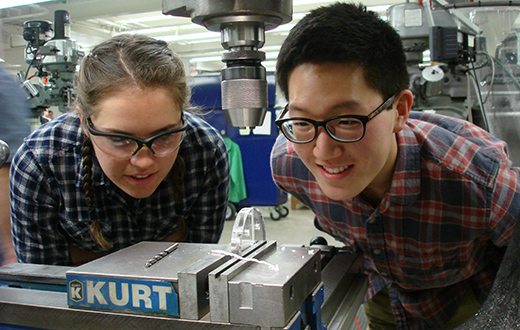
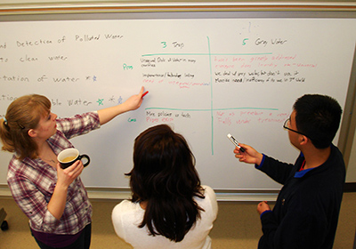
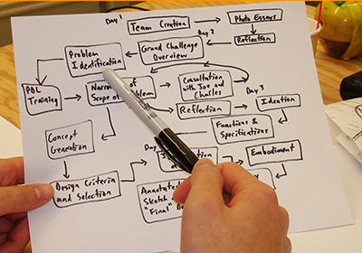
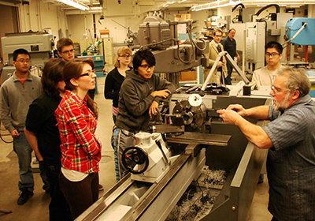

Bucknell engineering professor Joe Tranquillo shares the lessons he learned hosting a 10-day workshop that gave engineering students an opportunity to tackle one of the NAE’s Grand Challenges.

by Joe TranquilloAssociate Professor of Biomedical and Electrical Engineering, Bucknell University
Visiting Faculty Scholar, Epicenter
Imagine leading 24 first- and second-year engineering students in building products to address the National Academy of Engineering (NAE) Grand Challenge, “Restoring and Improving Urban Infrastructure.” Students would find their own problems, brainstorm possible solutions, pick one and then build functional products. Now imagine that all of this would take place over 10 days and students wouldn’t be paid or receive credit.
This may sound unlikely, but it happened successfully at Bucknell University over the 2012 January break as the KEEN Winter Interdisciplinary Design Experience (K-WIDE). The program, which I hosted along with professor Charles Kim of mechanical engineering, was created to provide opportunities for engineering students from different disciplines to collaborate with one another.
This article is meant to give you helpful tips on how to design a bootcamp that, like K-WIDE, is full of powerful learning experiences. Explaining the exact nuts and bolts of our K-WIDE is unlikely to give you the step-by-step guide you need to design your own bootcamp. Instead, I have distilled down some of the key findings from K-WIDE and other intensive programs. Much of what is below is common sense, but they are also points that are easy to forget in the heat of a bootcamp.
Picking Projects
Pedagogy
Logistics
Space and Personnel
Beginnings and Endings
Picking Projects
A bootcamp is driven by two intertwining factors. First, there are the learning goals – what students should be taking away when they leave. Second, a project makes the content come alive and integrates the learning. A project is also vital for keeping long-term focused attention. To students, the project IS the bootcamp.
- The project should be well motivated and have a clear “why.” From the student perspective, this “why” could be personal, regional, national or global.
- From the student perspective the project should appear to be too difficult to complete in the given time. Bootcamps are an opportunity for students to learn to scale back the scope of a project.
- Faculty can brainstorm their own approaches to assignments as a way to ensure that there is a good balance between open-ended and well-defined instructions.
- A large project can lead to frustrations but also enormous opportunities for learning a growth mindset.
- A bootcamp should always have a unique deliverable; something that students can talk about at a job interview.
- Project topics can come from a wide range of sources, including the NAE Grand Challenges, alumni, and local or regional businesses. It is helpful if the project is from an outside source.

Pedagogy
Bootcamps bring some challenges and opportunities that are not as present in traditional courses.
- Immersive programs move very quickly. There is little time to change rigid plans and it is best to be as fluid as possible.
- Minimize formal lectures. Faculty and students cannot sustain the energy to deliver or listen to lecture in an intense program. A good rule of thumb is no more than 10 minutes of lecture at a time.
- Maximize hands-on activities that connect the learning goals to the project.
- Prepare lesson plans ahead of time but expect things to go wrong. Part of being prepared is to allocate time to make these adjustments.
- Have a plan for managing intense emotions that accompany an immersive experience. Keep the focus on learning rather than progress.
- Teams can be an important learning experience for students, and they can also help you reduce the number of parties vying for your attention.
- High-level goals and concrete learning objectives are more important than in regular classes because they enable fast decisions to be made by both the instructors and students.
- Personal growth should be one of the high-level goals.
- Post learning objectives in a public place and refer to them often.
- Having an assessment plan will give you data to support publications and continue support from your administration.
- Co-teaching with a trusted colleague can distribute the workload and can also provide more diverse content and styles of instruction.

Logistics
Bootcamps move very quickly so any preparation that can be done beforehand can save a great deal of frustration for both you and the students.
- Use targeted recruitment efforts. Don’t worry about bumping up application numbers. Worry about getting the right students.
- Accept a less-qualified but emotionally mature student ahead of a gifted but volatile one.
- If holding the bootcamp at a non-academic time, find the policies on housing students. Your athletic department may be a very good resource.
- Be sure to have the mechanisms of handling money worked out before the program. Collect tuition, or at least a deposit, from students before the program. Pay the teaching team and guest speakers after they perform their roles.
- Document as much as possible during the bootcamp. Notes will help you refine the program. Photos, videos, and stories will help with future publicity.
- Meals and breaks are excellent ways to interact informally. Use these strategically and plan them so you can participate.
- Build in some fun activities. Have some small toys or candy ready to give out when breakthroughs are made. Tie these rewards to learning goals.

Space and PersonnelSpaces provide the containers in which learning can take place – they say something powerful to the students about what is expected. The support staff can bring in added spice but must be chosen carefully so their voices align with the goals of the bootcamp.
- Be sure you have at least one dedicated space reserved the entire time that can serve as a “home base.”
- If you will need specialty spaces, reserve them well ahead of time. Be sure to use them in some way so that you can justify their reservation in following years.
- If you need any special media, be sure you have it reserved and tested at least one week in advance.
- Use technology you feel comfortable with; a bootcamp is not the place to test out technologies that are foreign to you.
- If you need the expertise of an individual, let them know well in advance what you would like them to do and when would be most appropriate.
- Design activities that personalize the space. These might include creating a team mascot to be displayed publicly, rapidly designing furniture or creating a live storyboard for students to use as they navigate their project.
- Recruiting a senior student to be part of the teaching team is a way of distributing the workload. It also provides instructors an “ear on the ground” to detect issues early and a sanity check for assignments.
- Guest speakers only add to the bootcamp if they target the learning goals and add to the project.
Beginnings and Endings
Beginnings set the tone and endings are remembered. There should be a conscious plan for both.
- Holding a “pre-meeting” can be a good way to set the tone from the first minute and lay out the logistics of the program.
- Find the most effective ways to reward those who have helped. Letters to administrators can be very powerful.
- Have both a formal and informal assessment and wrap-up.
- Focus the informal wrap-up on the growth that has occurred.
- A banquet or final expo is a great formal ending. Make it visible. Invite the administration and local press.
This long list of suggestions is evidence of the time and dedication it takes to design your own bootcamp. However, know that an immersive experience like this can be incredibly powerful and transformative not only for students, but for instructors as well.
Please feel free to contact me at jvt002@bucknell.edu with any questions or to share your stories.
Read more about the program: http://www.bucknell.edu/x74340.xml